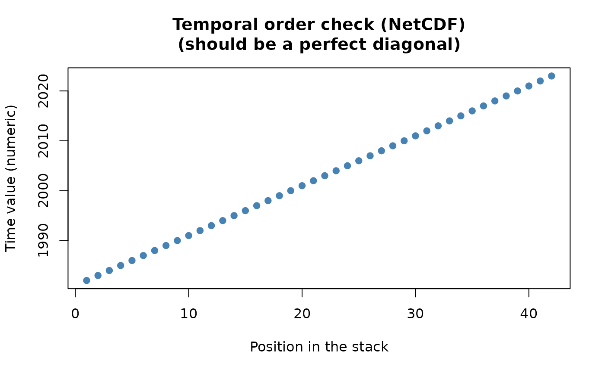

Read and chronologically order a single multi-temporal NetCDF file
Source:R/read_stack.R
read_netcdf_stack.RdWraps terra::rast() for the common case of one NetCDF file holding an
entire time series (e.g. reanalysis or climate model output), verifying
that the layers come out in chronological order using the file's own
time dimension (via terra::time()) rather than assuming the on-disk
layer order is already correct.
Arguments
- path
Character. Path to the
.ncfile.- var
Character or
NULL. Variable name to read, if the file has more than one. IfNULLand the file has a single variable, that one is used; if it has several, the function stops and lists them.- report
Logical. If
TRUE(default), draw a diagnostic plot of stack position vs. time value (a perfect diagonal line confirms correct ordering; deviations reveal layers that would otherwise have been read in the wrong temporal order).- verbose
Logical. Print progress messages and elapsed time.
Value
A terra::SpatRaster, ordered chronologically, with layer names
taken from the time values, and the time dimension itself preserved
as proper time metadata (readable via terra::time()) rather than
discarded after the verification step above.
Details
Why this matters more than it looks: a trend analysis assumes
that successive raster layers represent the true chronological
sequence. A NetCDF file's own internal layer order and its time
dimension are two separate pieces of metadata, written independently
– nothing in the file format itself guarantees they agree, and if
they do not, every subsequent statistical result becomes invalid
even though the analysis completes without any error. This function
reorders by the time dimension explicitly rather than trusting the
on-disk order, the same "surface a silent risk rather than let it
pass unnoticed" instinct behind read_ordered_stack()'s own,
stricter, filename-based check (see its own documentation for the
fuller reasoning, which applies here too).
Function type: Data import function – builds an ordered
SpatRaster from one multi-temporal NetCDF file. It performs no
statistical inference.
Methodological details
Temporal ordering
Layers are reordered explicitly from the NetCDF time coordinate; the function does not assume that physical layer order and temporal metadata already agree.
Monthly or seasonal data
This function only orders layers chronologically – it does not remove
or otherwise account for a seasonal cycle (e.g. monthly reanalysis
values with an annual signal, very common in NetCDF climate data). If
the detected time step looks sub-annual (based on terra::timeInfo()),
a warning() is issued reminding you to deseasonalise with
compute_anomalies() before passing the result to
trend_test(), slope_estimator(), or workflow_tst(), all of
which assume a monotonic trend, not a periodic one. Ordering and
deseasonalisation solve different problems.
Limitations
A usable, unambiguous time coordinate is required. With multiple
variables, var must identify the intended field; this function does
not guess among scientifically different variables.
Quality assurance
Tests verify time-coordinate extraction and ordering, variable
selection, layer naming, preserved terra geometry/time metadata,
and failures for absent or ambiguous NetCDF variables. See
?sptrends for the package-wide release-check protocol.
See also
Other Data import functions:
read_ordered_stack()
Examples
# \donttest{
if (requireNamespace("ncdf4", quietly = TRUE)) {
# Convert the bundled environmental series to one temporary NetCDF.
r <- read_ordered_stack(example_data("vhp_ndvi"))
path <- tempfile(fileext = ".nc")
terra::writeCDF(r, path, varname = "ndvi", overwrite = TRUE)
s <- read_netcdf_stack(path)
terra::nlyr(s)
terra::time(s)
unlink(path)
}
#> Temporal order auto-detected with pattern '(19[0-9]{2}|20[0-9]{2})'.
#> Automatic mode: order detected from file names. For higher reliability -- especially if the series is not annual -- supplying 'files' explicitly (with 'time' or 'cycle_type') is recommended. See ?read_ordered_stack.
#> Temporal order verification (mandatory, cannot be skipped):
#> stack_position detected_number file
#> 1 1982 VHP_SMN_annual_ndvi_1982.tif
#> 2 1983 VHP_SMN_annual_ndvi_1983.tif
#> 3 1984 VHP_SMN_annual_ndvi_1984.tif
#> 4 1985 VHP_SMN_annual_ndvi_1985.tif
#> 5 1986 VHP_SMN_annual_ndvi_1986.tif
#> 6 1987 VHP_SMN_annual_ndvi_1987.tif
#> 7 1988 VHP_SMN_annual_ndvi_1988.tif
#> 8 1989 VHP_SMN_annual_ndvi_1989.tif
#> 9 1990 VHP_SMN_annual_ndvi_1990.tif
#> 10 1991 VHP_SMN_annual_ndvi_1991.tif
#> 11 1992 VHP_SMN_annual_ndvi_1992.tif
#> 12 1993 VHP_SMN_annual_ndvi_1993.tif
#> 13 1994 VHP_SMN_annual_ndvi_1994.tif
#> 14 1995 VHP_SMN_annual_ndvi_1995.tif
#> 15 1996 VHP_SMN_annual_ndvi_1996.tif
#> 16 1997 VHP_SMN_annual_ndvi_1997.tif
#> 17 1998 VHP_SMN_annual_ndvi_1998.tif
#> 18 1999 VHP_SMN_annual_ndvi_1999.tif
#> 19 2000 VHP_SMN_annual_ndvi_2000.tif
#> 20 2001 VHP_SMN_annual_ndvi_2001.tif
#> 21 2002 VHP_SMN_annual_ndvi_2002.tif
#> 22 2003 VHP_SMN_annual_ndvi_2003.tif
#> 23 2004 VHP_SMN_annual_ndvi_2004.tif
#> 24 2005 VHP_SMN_annual_ndvi_2005.tif
#> 25 2006 VHP_SMN_annual_ndvi_2006.tif
#> 26 2007 VHP_SMN_annual_ndvi_2007.tif
#> 27 2008 VHP_SMN_annual_ndvi_2008.tif
#> 28 2009 VHP_SMN_annual_ndvi_2009.tif
#> 29 2010 VHP_SMN_annual_ndvi_2010.tif
#> 30 2011 VHP_SMN_annual_ndvi_2011.tif
#> 31 2012 VHP_SMN_annual_ndvi_2012.tif
#> 32 2013 VHP_SMN_annual_ndvi_2013.tif
#> 33 2014 VHP_SMN_annual_ndvi_2014.tif
#> 34 2015 VHP_SMN_annual_ndvi_2015.tif
#> 35 2016 VHP_SMN_annual_ndvi_2016.tif
#> 36 2017 VHP_SMN_annual_ndvi_2017.tif
#> 37 2018 VHP_SMN_annual_ndvi_2018.tif
#> 38 2019 VHP_SMN_annual_ndvi_2019.tif
#> 39 2020 VHP_SMN_annual_ndvi_2020.tif
#> 40 2021 VHP_SMN_annual_ndvi_2021.tif
#> 41 2022 VHP_SMN_annual_ndvi_2022.tif
#> 42 2023 VHP_SMN_annual_ndvi_2023.tif
 #> Stack built: 42 layers, 146 x 338 cells.
#> >> [read_ordered_stack()] elapsed: 0.12 s
#> Temporal order verification (mandatory, cannot be skipped):
#> stack_position time
#> 1 1982
#> 2 1983
#> 3 1984
#> 4 1985
#> 5 1986
#> 6 1987
#> 7 1988
#> 8 1989
#> 9 1990
#> 10 1991
#> 11 1992
#> 12 1993
#> 13 1994
#> 14 1995
#> 15 1996
#> 16 1997
#> 17 1998
#> 18 1999
#> 19 2000
#> 20 2001
#> 21 2002
#> 22 2003
#> 23 2004
#> 24 2005
#> 25 2006
#> 26 2007
#> 27 2008
#> 28 2009
#> 29 2010
#> 30 2011
#> 31 2012
#> 32 2013
#> 33 2014
#> 34 2015
#> 35 2016
#> 36 2017
#> 37 2018
#> 38 2019
#> 39 2020
#> 40 2021
#> 41 2022
#> 42 2023
#> Stack built: 42 layers, 146 x 338 cells.
#> >> [read_ordered_stack()] elapsed: 0.12 s
#> Temporal order verification (mandatory, cannot be skipped):
#> stack_position time
#> 1 1982
#> 2 1983
#> 3 1984
#> 4 1985
#> 5 1986
#> 6 1987
#> 7 1988
#> 8 1989
#> 9 1990
#> 10 1991
#> 11 1992
#> 12 1993
#> 13 1994
#> 14 1995
#> 15 1996
#> 16 1997
#> 17 1998
#> 18 1999
#> 19 2000
#> 20 2001
#> 21 2002
#> 22 2003
#> 23 2004
#> 24 2005
#> 25 2006
#> 26 2007
#> 27 2008
#> 28 2009
#> 29 2010
#> 30 2011
#> 31 2012
#> 32 2013
#> 33 2014
#> 34 2015
#> 35 2016
#> 36 2017
#> 37 2018
#> 38 2019
#> 39 2020
#> 40 2021
#> 41 2022
#> 42 2023

#> Stack built from NetCDF: 42 layers, 146 x 338 cells.
#> >> [read_netcdf_stack()] elapsed: 0.04 s
# }